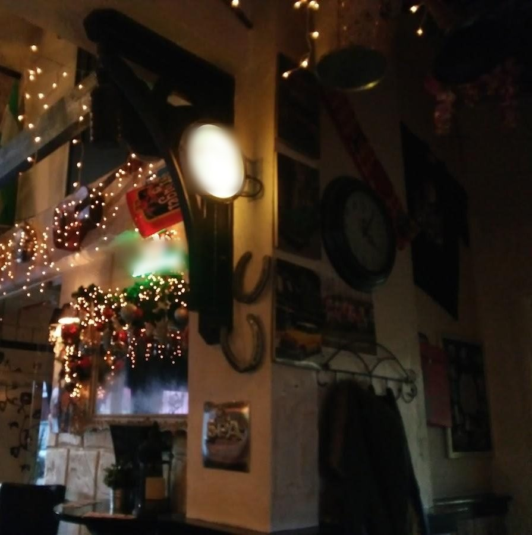
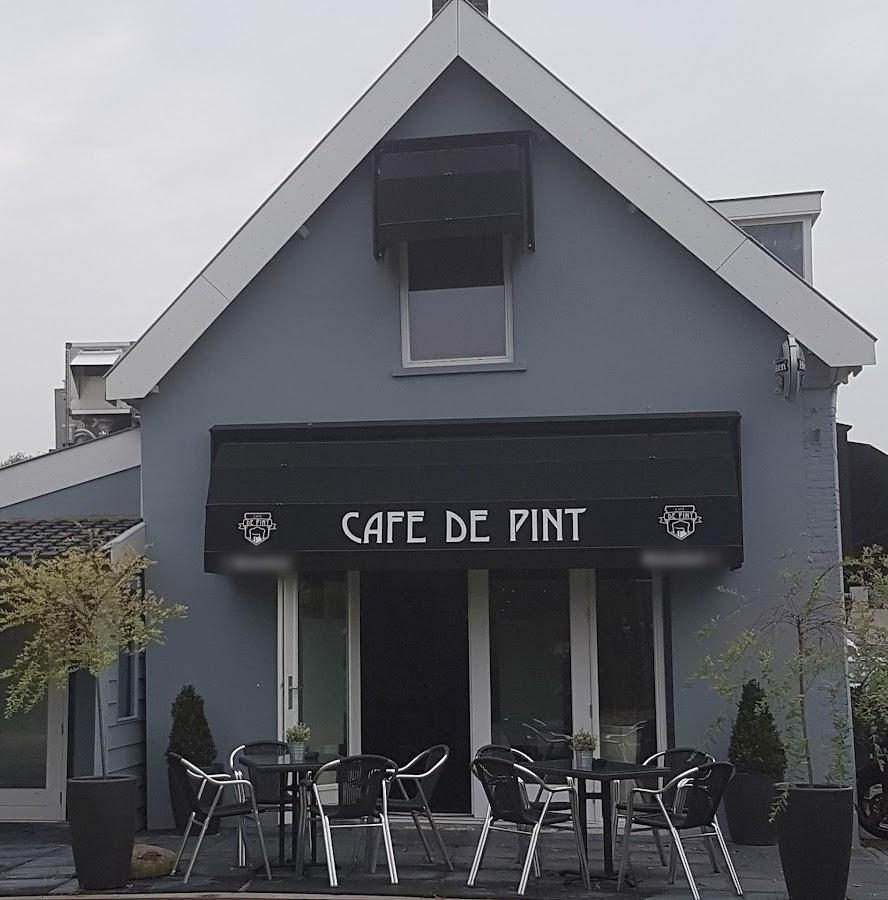
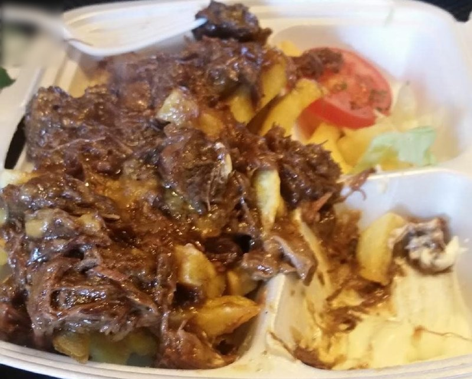
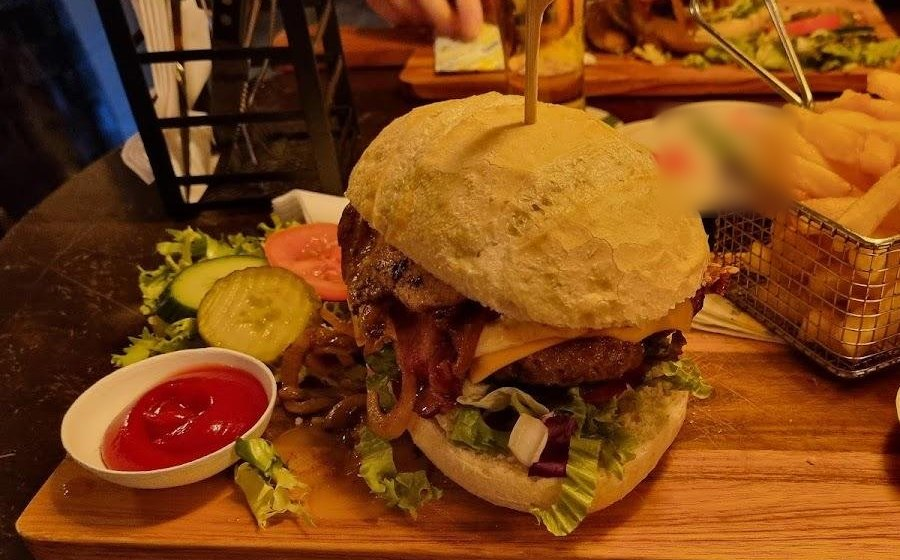
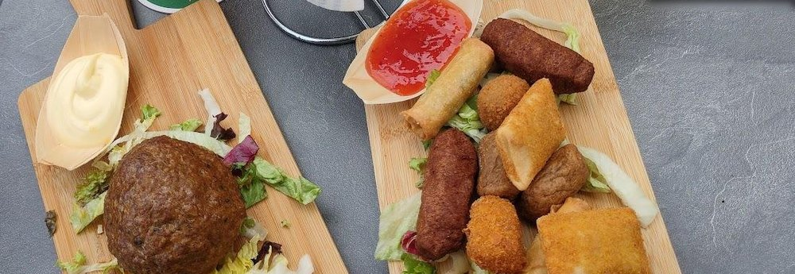
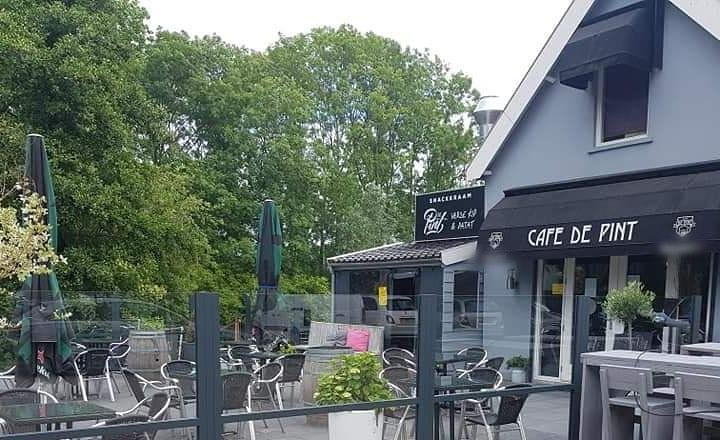
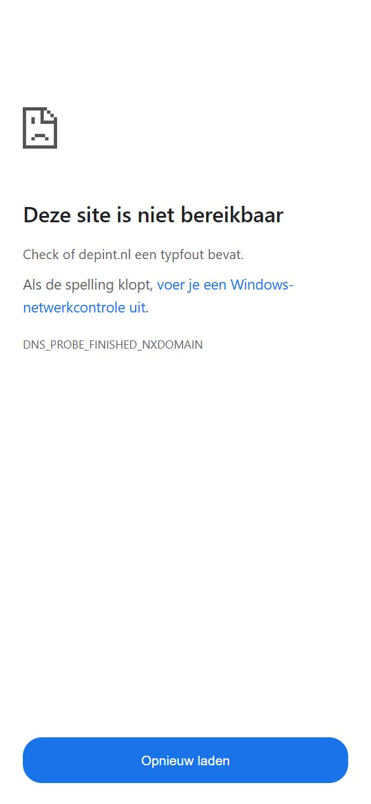
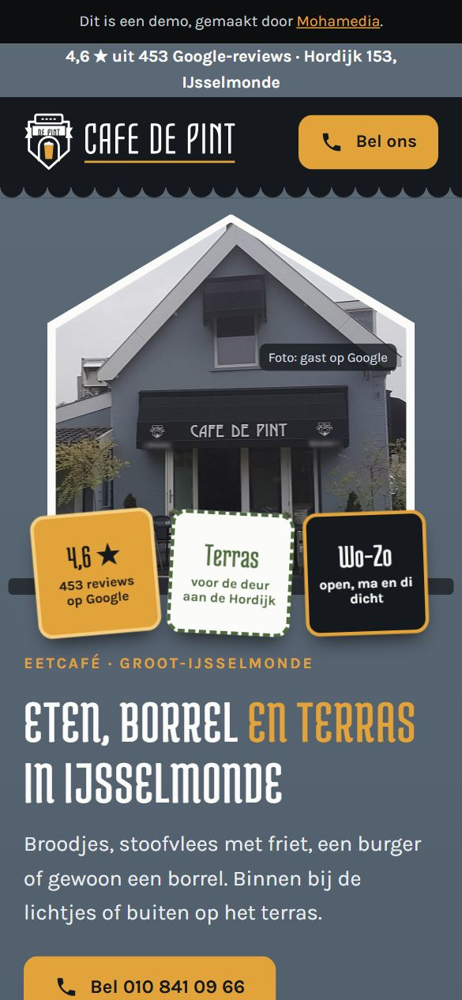

Een echt buurtcafé
Klanten schrijven dat het er altijd gezellig is, ook op zondag.


Eetcafé · Groot-IJsselmonde
Broodjes, stoofvlees met friet, een burger of gewoon een borrel. Binnen bij de lichtjes of buiten op het terras.
4,6 uit 453 reviews op Google Rotterdam-IJsselmonde
Plan je bezoek
Kies wat je komt doen, met hoeveel en wanneer. Je zin staat dan klaar voor als je belt.
Hoi, wij komen vrijdag met z'n tweeën eten. Is er plek?
Bel 010 841 09 66 Maandag en dinsdag zijn we dicht.Op tafel
Drie borden zoals gasten ze op Google zetten.



In de reviews noemen gasten ook de broodjes en de kaassoufflé. Foto's: gasten op Google.
Uit de reviews
Drie dingen die steeds terugkomen in de reviews op Google.
Klanten schrijven dat het er altijd gezellig is, ook op zondag.

Klanten schrijven over vriendelijke bediening die snel is.
Klanten noemen het eten eenvoudig maar lekker: stoofvlees, broodjes, burgers.
Altijd een fijn en gezellig eetcafé.
MennoHet eten is erg goed en de sfeer nog beter, ook op een zondag.
PeterSuperaardige bediening, en eenvoudige maar heerlijke gerechten.
PascaleSamengevat uit reviews op Google, niet letterlijk geciteerd.
Zo simpel
Vragen
Nee, maandag en dinsdag zijn we dicht. Woensdag tot en met zondag zijn we open.
Ja, voor de deur aan de Hordijk.
Onder meer broodjes, kaassoufflé, stoofvlees met friet, burgers en borrelhapjes. Vraag naar de rest als je belt.
Google Maps vermeldt een rolstoeltoegankelijke ingang. Bel bij twijfel even: 010 841 09 66.
Tijden & route
| Maandag | dicht |
| Dinsdag | dicht |
| Woensdag | 14:00–22:00 |
| Donderdag | 14:00–22:00 |
| Vrijdag | 12:00–00:00 |
| Zaterdag | 14:00–00:00 |
| Zondag | 14:00–22:00 |
Op feestdagen kan het anders zijn. Bel bij twijfel even.
Eetcafé De Pint
Hordijk 153
3079 DG Rotterdam
Hordijk 153
3079 DG Rotterdam
De kaart komt van Google Maps en laadt pas als je klikt.

Woensdag tot en met zondag open. Bel even, of kijk eerst wat je komt doen.


Voorbeeld, geen belofte. Vul samen in wat realistisch is.
Per jaar: € 1.560 extra omzet.
€ 595 is de omzet van 40 gasten.
© Mohamedia · demo-ontwerp, gebruik zonder betaling niet toegestaan